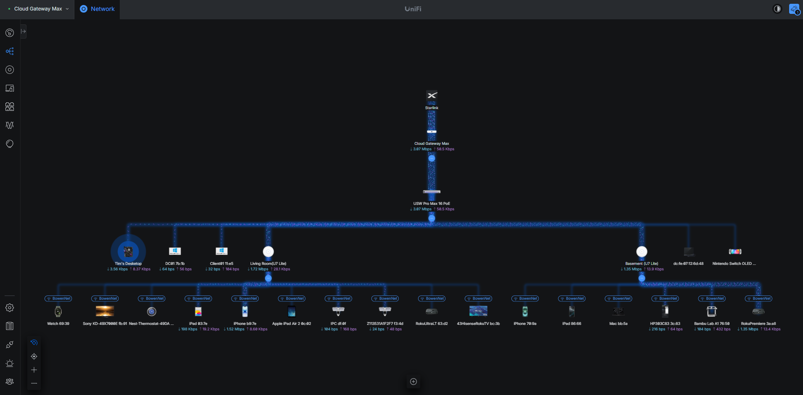
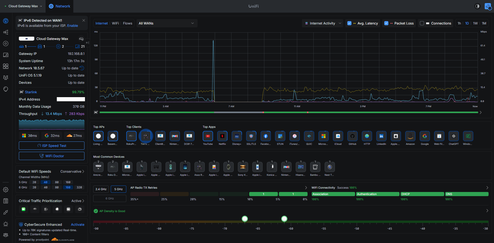

Overview
This project uses the UniFi platform to practice enterprise networking concepts in a controlled home-lab environment. The network includes a Cloud Gateway Max, Switch Pro Max, and multiple U7 Lite access points. The lab is used to test segmentation, wireless deployment, firewall behavior, device management, and infrastructure changes.
Architecture

Implementation
- Installed and adopted the UniFi Cloud Gateway Max.
- Deployed the UniFi Switch Pro Max as the managed core switch.
- Installed and configured two UniFi U7 Lite wireless access points.
- Migrated the primary LAN from the 192.168.1.0/24 range to 192.168.0.0/24.
- Created separate Corporate, Guest, and IoT network/SSID roles for segmentation testing.
- Assigned a Corporate network/VLAN to a managed switch port and validated endpoint connectivity.
- Configured and tested firewall and isolation behavior between network segments.
- Documented topology, device inventory, addressing changes, and troubleshooting results.
Challenges and Troubleshooting
One of the most useful parts of the project was troubleshooting firewall-rule behavior. During testing, a broad rule blocked external connectivity, including traffic to a known public IP. I reviewed rule scope and ordering, corrected the policy, and retested connectivity. The exercise reinforced how rule order and source/destination scope affect network behavior.
The LAN migration also required updating infrastructure addresses and validating DNS, gateway, and server connectivity after the change.
Results
- Centralized UniFi management for gateway, switch, and wireless infrastructure.
- Established separate network roles for trusted, guest, and IoT devices.
- Validated managed switch-port assignment and segmented connectivity.
- Practiced firewall policy design, rule-order troubleshooting, and isolation testing.
- Maintained documentation as the network architecture evolved.
Lessons Learned
This project reinforced the value of planning addressing, VLANs, SSIDs, and firewall policy before implementation. It also demonstrated the importance of validating changes one layer at a time so that routing, DNS, switching, wireless, and firewall problems can be isolated efficiently.
UniFi Dashboard
